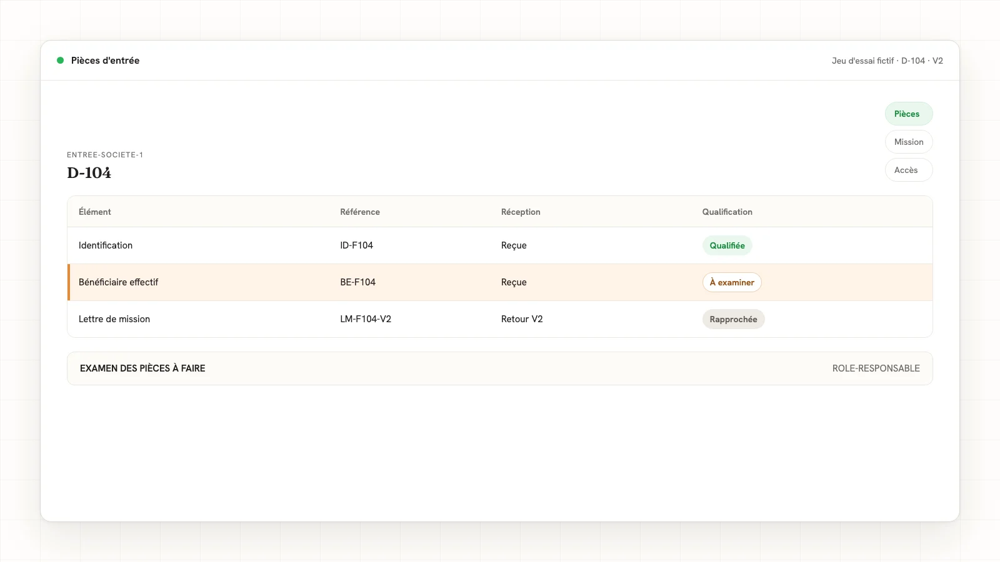
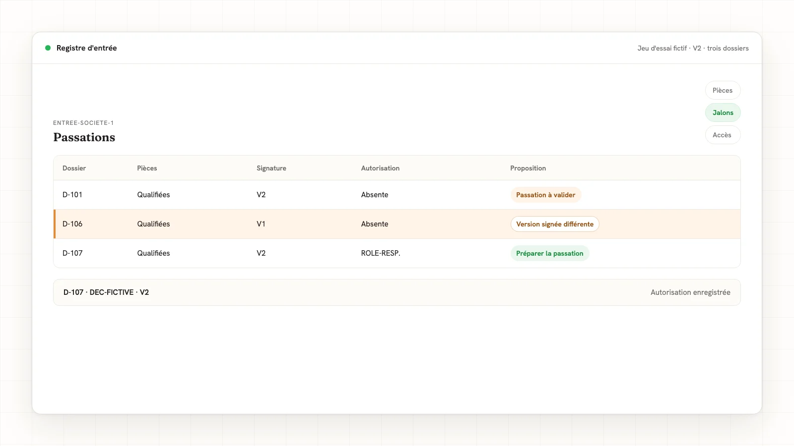

Fabrication locale · non publiée · Kevin Kitanga
Onboarding client en cabinet comptable : automatiser l'entrée en relation
Une checklist d'entrée en relation qui distingue pièces reçues, examen du cabinet, version signée et autorisation de passation. Quinze cas fictifs montrent les propositions et les refus.
Réponse directe
Pour automatiser l'entrée en relation d'un nouveau client au cabinet comptable, séparez trois suivis : les pièces attendues, les jalons de préparation et les décisions du cabinet. Une pièce reçue ne vaut pas identité vérifiée ; une lettre envoyée ne vaut pas contrat signé. Préparez les demandes et les rappels dans vos outils, puis soumettez le passage en production à une validation explicite portant sur le bon dossier et la bonne version de mission.
Qu'est-ce que l'onboarding client au cabinet comptable ?
L'onboarding client est l'organisation de l'arrivée d'un nouveau dossier : rassembler les informations utiles, cadrer la mission, préparer les accès et installer les habitudes de transmission. Ici, nous traitons son suivi administratif, jusqu'à la proposition de passage en production.
Un jalon est un point de contrôle nommé, avec un responsable, un état et une preuve. « Lettre envoyée », « lettre signée » et « démarrage autorisé » sont trois jalons différents. Les confondre produit un tableau vert alors que la mission attend encore une décision.
La complétude administrative décrit les pièces présentes dans une liste validée par le cabinet. Elle ne tranche ni leur valeur probante, ni le niveau de vigilance, ni l'acceptation du client. Cette distinction place l'entrée en relation dans la carte des tâches répétitives du cabinet, sans transformer une checklist en décision professionnelle.
Pourquoi la tâche casse à la main
Le dossier commence dans un échange commercial, continue dans la messagerie, puis arrive dans le suivi de production. À chaque passage, quelqu'un reconstitue ce que la personne précédente avait déjà compris. Une pièce jointe reste dans un fil ; la signature concerne une ancienne lettre ; l'accès est préparé avant que son périmètre soit confirmé.
La règle implicite ressemble souvent à ceci : « Je sais ce qu'il manque et je sais quand on peut commencer. » Tant qu'elle vit dans une seule tête, l'absence du collaborateur laisse le dossier sans prochaine action lisible. Le savoir-faire à écrire est plus précis : pour cette typologie de dossier et cette mission, quelle pièce attendons-nous, qui l'examine et quel événement autorise le jalon suivant ?
Avant d'ajouter une automatisation, examinez les fonctions déjà présentes dans vos outils. Un parcours intégré peut déjà suivre les pièces, la lettre et les étapes. Le travail utile porte alors sur les exceptions ou les passages entre outils, pas sur une deuxième checklist concurrente. Gardez un seul registre de référence pour chaque état.
Avant de commencer
Réunissez cinq éléments, sans recopier tout le dossier dans un nouveau fichier :
- Une référence interne stable, distincte du nom saisi dans un courriel.
- Une typologie de dossier et un périmètre de mission confirmés par le cabinet.
- Une liste de pièces versionnée, avec la raison de chaque demande.
- Les personnes autorisées à qualifier une pièce, apprécier la vigilance et autoriser le démarrage.
- Les événements réellement lisibles dans vos outils : réception, retour de signature, validation et changement de périmètre.
Une tâche de préparation n'a pas les mêmes droits qu'une tâche d'envoi. Commencez par la lecture des états et la préparation des demandes. Le cabinet choisit ensuite les validations et les accès nécessaires. Ne placez pas de mots de passe dans le registre : gardez uniquement l'état de l'habilitation et une référence vers le dispositif prévu pour les accès.
Checklist 1 : les pièces d'entrée
La liste suivante est une structure de travail, pas une liste réglementaire universelle. Le cabinet fixe les documents pertinents selon le client, la mission et sa procédure de vigilance.
| Ensemble | Ce que le suivi prépare | Ce que le cabinet examine |
|---|---|---|
| Identification | Référence de pièce, date de réception, état de lisibilité | Identité du client, portée et fiabilité des éléments |
| Bénéficiaire effectif, lorsque pertinent | Liste des éléments demandés et reçus | Identification et vérifications nécessaires |
| Objet de la relation | Questionnaire et informations reçues | Nature de la mission et cohérence de la relation |
| Mission | Référence et version du projet de lettre | Périmètre, conditions et acceptation |
| Reprise du dossier | Inventaire des fichiers et périodes disponibles | Travaux de reprise et échanges à conduire |
| Accès | État de la demande d'habilitation | Autorisation et périmètre des droits |
Le principe de départ est posé par L.561-5 : les personnes concernées « Identifient leur client et, le cas échéant, le bénéficiaire effectif », puis vérifient les éléments d'identification. Le texte distingue identification et vérification, et prévoit notamment une dérogation encadrée au IV. Notre circuit administratif conserve la décision de vigilance au cabinet ; il n'applique pas cette dérogation par déduction automatique.
Pour chaque pièce, utilisez quatre états : attendue, reçue à examiner, qualifiée par le cabinet, à remplacer. « Reçue à examiner » signifie seulement que le document est arrivé. Une pièce illisible est à remplacer ; une pièce rattachée à un autre dossier est une exception, pas une réception valable.
La mécanique de demande peut reprendre la règle de relance des pièces clients. À réception, la proposition de relance correspondante disparaît. Les autres demandes restent visibles, avec leur objet précis. Une relance déjà validée ne se renvoie pas au simple rejeu du même événement.

Checklist 2 : les jalons et leur preuve
Un jalon utile répond à trois questions : qu'est-ce qui a changé, quel événement le démontre et quelle est la prochaine action ? Ne déduisez pas « terminé » du nombre de cases cochées.
| Jalon | Preuve attendue dans notre méthode | Prochaine action proposée |
|---|---|---|
| Liste définie | Version de checklist validée | Préparer la demande des pièces absentes |
| Pièces reçues | Références des documents liés au dossier | Présenter les pièces à examiner |
| Examen réalisé | Décision du cabinet, auteur et périmètre | Présenter le jalon restant |
| Mission cadrée | Référence de lettre et version retenue | Préparer la demande de signature |
| Signature constatée | Retour relié à la bonne version | Présenter le dossier au responsable |
| Démarrage autorisé | Validation explicite du responsable | Préparer la passation à la production |
L.561-5-1 prévoit aussi le recueil des « informations relatives à l'objet et à la nature de cette relation et tout autre élément d'information pertinent ». Le même article prévoit leur actualisation pendant la relation. C'est une raison pour conserver le contexte de mission, pas seulement un indicateur de pièces reçues.
Lorsqu'une activité ou un périmètre change, ouvrez un événement de réexamen. Ne remettez pas automatiquement toutes les pièces à zéro ; présentez la différence au cabinet. Une personne décide quelles demandes et quelles validations doivent être reprises.
Checklist 3 : la lettre et la signature
Le cabinet confirme le périmètre et les conditions de la mission, puis retient la version du contrat à signer. Dans notre méthode, le suivi attend ce contrat signé et une autorisation humaine distincte avant de proposer la passation en production. Il ne déduit pas un délai légal de signature et ne transforme pas le retour d'un document en acceptation automatique du client.
Suivez séparément : projet préparé, version approuvée, demande envoyée, retour reçu et retour rapproché de la version approuvée. « Signée » n'est pas un état fiable si vous ignorez quelle lettre a été signée. Une copie de la version V1 ne ferme pas la demande portant sur V2.
La lettre de mission n'est pas un document que l'automatisation accepte à la place du cabinet. Nous préparons le rapprochement de références. Le professionnel conserve le choix du périmètre, des conditions et de l'acceptation ; les parties gardent leur signature.

La règle écrite
La frontière. Notre méthode répartit les gestes ainsi :
| Se prépare seul | Attend une validation | Reste humain |
|---|---|---|
| Inventaire des pièces et événements reçus | Envoi d'une demande ou d'un rappel préparé | Identification et vérification du client |
| Liste des pièces manquantes selon la checklist retenue | Qualification administrative d'une pièce | Appréciation de la vigilance LCB-FT |
| Rapprochement de la signature et de la version | Autorisation de passation en production | Acceptation de la mission et signature |
| Proposition de prochaine action | Modification du périmètre du circuit | Analyse d'un soupçon et décision du professionnel |
La proposition. Nous produisons une prochaine action avec ses motifs et ses références. Les commentaires, qualifications et autorisations saisis par le cabinet restent séparés. Une nouvelle réception régénère la proposition, sans remplacer une saisie humaine. Chaque validation porte sur un dossier et une version précise.
Dans ce jeu fictif, la décision enregistrée comporte la référence du dossier, la version de mission, l'auteur, la référence de décision et un résultat explicitement favorable. « Favorable » est un choix saisi par le cabinet, jamais calculé à partir des pièces. Une décision concernant un autre dossier ou une ancienne version, un résultat défavorable ou inconnu, ou un champ manquant arrêtent la préparation de la passation. Ces champs décrivent notre essai administratif, pas un modèle réglementaire de décision de vigilance. L'autorisation de passation reste un jalon distinct.
L'arrêt. La préparation de la passation cesse si une pièce est illisible, si la référence de dossier diverge, si la checklist est absente, si la lettre signée n'est pas la version retenue ou si la décision du cabinet attend un réexamen. Une incohérence d'identité ou une question de vigilance sort du circuit répétitif. L'outil présente le motif ; il ne produit ni classement de risque, ni décision d'acceptation, ni déclaration à TRACFIN.
Le jeu d'essai. Un jeu d'essai fictif est un ensemble de situations construites pour éprouver la règle, sans données client. Nous avons rejoué quinze situations administratives sur des références fictives D-101 à D-115. Ce test vérifie des transitions de suivi ; il n'effectue aucune vérification d'identité ou analyse LCB-FT.
La règle dans les mots du cabinet
| Déclencheur | Condition | Proposition | Exception |
|---|---|---|---|
| Nouvelle entrée | Checklist absente | Aucune proposition | Faire définir la liste |
| Réception | Pièce attendue encore absente | Demander la pièce nommée | Pièce illisible ou mauvais dossier |
| Liste reçue | Pièces non qualifiées | Présenter l'examen | Aucune qualification déduite |
| Examen terminé | Décision favorable complète sur le même dossier et la même version | Présenter le jalon restant | Décision absente, autre dossier, ancienne version, non favorable ou incomplète : attendre le cabinet |
| Lettre rapprochée | Version signée différente | Aucune passation | Rapprocher la bonne version |
| Jalons administratifs réunis | Autorisation non enregistrée | Présenter la passation à valider | Ne pas démarrer |
| Autorisation enregistrée | Même dossier et même version | Préparer la passation | Réexamen ou incohérence |
Rejoué sur le jeu fictif
Les sorties ci-dessous proviennent du script de règle exécuté sur quinze entrées fictives. « Préparer la passation » est une sortie de suivi, pas un démarrage de mission. Les cinq derniers cas disposent tous d'une signature V2 et d'une autorisation sur leur dossier V2 : seule la décision enregistrée empêche la passation.
| Cas joué | Sortie obtenue | Décision |
|---|---|---|
| D-101, jalons réunis sans autorisation | PASSATION À VALIDER | Attendre le responsable |
| D-102, pièce d'identification attendue | DEMANDE À VALIDER : identification | Préparer la demande |
| D-103, pièce illisible | REFUS : PIÈCE ILLISIBLE | Faire examiner et remplacer |
| D-104, bénéficiaire effectif non qualifié | EXAMEN DES PIÈCES À FAIRE | Attendre la qualification du cabinet |
| D-105, décision du cabinet absente | DÉCISION CABINET ATTENDUE | Ne rien déduire sur la vigilance |
| D-106, signature V1 pour lettre V2 | REFUS : VERSION SIGNÉE DIFFÉRENTE | Rapprocher la bonne version |
| D-107, décision favorable complète sur D-107 V2, jalons et autorisation réunis | PRÉPARER LA PASSATION | Préparer seulement |
| D-108, checklist absente | REFUS : CHECKLIST ABSENTE | Faire définir la liste |
| D-109, pièce d'un autre dossier | REFUS : RÉFÉRENCE DIVERGENTE | Faire corriger le rattachement |
| D-110, réexamen demandé | REFUS : RÉEXAMEN CABINET | Attendre une nouvelle décision |
| D-111, décision concernant D-999 | REFUS : DÉCISION AUTRE DOSSIER | Faire vérifier le rattachement |
| D-112, décision V1 pour mission V2 | REFUS : DÉCISION ANCIENNE VERSION | Attendre la décision sur V2 |
| D-113, décision défavorable | REFUS : DÉCISION NON FAVORABLE | Arrêter la préparation |
| D-114, auteur absent de la décision | REFUS : DÉCISION INCOMPLÈTE | Faire compléter par le cabinet |
| D-115, résultat absent de la décision | REFUS : DÉCISION INCOMPLÈTE | Ne pas déduire un accord |
Le rejeu conserve les entrées, les résultats et les assertions. Une seconde exécution sur les mêmes événements produit la même proposition ; elle ne crée aucun message envoyé. Un commentaire humain identique avant et après le calcul vérifie la séparation entre proposition et saisie. Cette preuve porte sur le script fictif présenté, pas sur une intégration déjà livrée au cabinet.
Ce qui reste au cabinet
La LCB-FT désigne la lutte contre le blanchiment de capitaux et le financement du terrorisme. La vigilance ne se résume pas à collecter des pièces. Notre règle de suivi ne réalise aucune analyse de soupçon, ne décide d'aucune déclaration à TRACFIN et n'affiche pas de verdict « conforme ». Le responsable distingue l'état administratif du dossier de ses décisions professionnelles.
Pour les données personnelles, le principe de minimisation prévoit des données « adéquates, pertinentes et limitées à ce qui est nécessaire au regard des finalités pour lesquelles elles sont traitées ». Gardez dans le suivi les références et états utiles, plutôt que des copies de documents d'identité dans chaque tableau. Le cabinet définit les accès et la conservation selon les documents et traitements concernés, séparément du simple état « onboarding terminé ».
Les erreurs fréquentes
- Une checklist identique pour toutes les missions. Le même document peut être pertinent dans un dossier et inutile dans un autre. Le cabinet valide les conditions de demande.
- Un vert unique pour toutes les étapes. Affichez le jalon manquant et sa prochaine action, pas seulement un pourcentage.
- Une signature détachée de sa version. Conservez la référence de la lettre concernée et présentez tout écart.
- Un démarrage déduit de la réception des pièces. Le responsable conserve une autorisation explicite, distincte de la complétude.
- Un dossier complet interprété comme un client accepté. L'acceptation et l'appréciation de la vigilance restent des décisions professionnelles.
Questions fréquentes
Quelles pièces demander à un nouveau client ?
Partez de la mission et de la typologie du client, puis faites valider la liste par le cabinet. Distinguez les éléments d'identification, le contexte de la relation, le contrat, les documents de reprise et les accès. Le tableau de cet article aide à structurer cette liste ; il ne prescrit pas les mêmes pièces pour chaque dossier.
Peut-on automatiser la lettre de mission ?
On peut préparer des informations et suivre ses versions dans les outils prévus par le cabinet. Le contenu retenu, l'acceptation de la mission et la signature restent aux personnes concernées. Commencez par rapprocher les états déjà produits par votre outil de signature, plutôt que par fabriquer un contrat à partir d'un courriel.
À quel moment le dossier passe-t-il en production ?
Dans notre méthode, quand le cabinet a enregistré les décisions attendues, rapproché la signature de la bonne version et autorisé la passation. Ce n'est pas un automatisme déclenché par la dernière pièce reçue. Un changement de périmètre ouvre un réexamen.
Faut-il un nouvel outil pour ce suivi ?
Non, pas nécessairement. Une messagerie, une gestion documentaire et un registre existant peuvent fournir les événements utiles. Vérifiez leurs fonctions, leurs accès et leurs formats avant de choisir ce qui mérite réellement une automatisation.
La règle à retenir
Une réception ferme une demande de pièce, pas une décision du cabinet. Chaque passage important garde sa preuve, sa version et sa validation.
Pour aller plus loin
Nous prenons en charge la mécanique répétitive de l'entrée en relation : écrire les listes conditionnelles et les jalons dans vos mots, préparer les demandes, rapprocher les états et présenter les exceptions dans vos outils. Votre cabinet garde les qualifications, les décisions de vigilance, l'acceptation et la signature.
La méthode de prise en charge comprend une recette, c'est-à-dire des essais définis puis validés par vos équipes avant usage. Le service d'automatisation des tâches du cabinet inclut la construction et la maintenance de la règle retenue, sans dupliquer ce que vos outils réalisent déjà.
Et dans votre cabinet ?
Nous écrivons vos listes et jalons, nous automatisons leur suivi dans vos outils et vos équipes valident les essais. Vous gardez les décisions et la signature. Rien à envoyer : la description de la tâche suffit.
Confier cette tâche